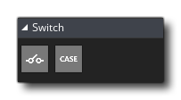

The Switches action library contains those actions that are required for creating switch statements in your game action code. In a number of situations you want to let your instances complete an action depending on a particular value, and while you can do this using a number of consecutive "if" statements, this can get messy when the possible choices gets above two or three. In these cases it is better to use the "switch" action. A switch action works as follows:
- You supply value a (usually from some kind of expression or variable)
- The value is compared with the value assigned to the various "case" statements
- If the value is the same as the case value, the contents of the case are performed otherwise the next case is evaluated, etc...
- Once a case has been performed or all cases have been evaluated and failed, the code will continue from the end of the switch
- If all cases failed and you have a default case, then that will be performed before the code continues from the end of the switch
The Switches library has the following actions:

|
Switch |

|
Case |

|
Default |